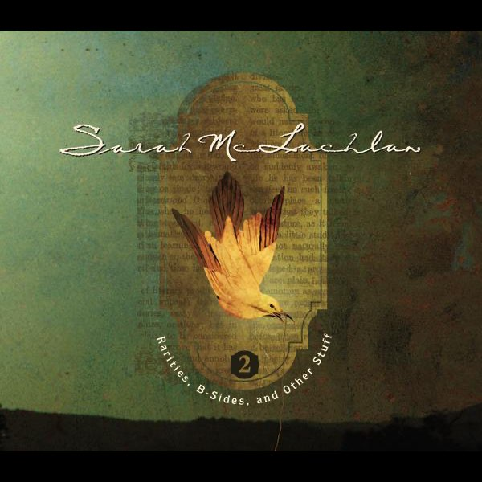

안녕하세요 라보엠입니다.
오늘 퇴근길에 음악앱의 추천을 받은 노래를 소개해드리겠습니다. "When She Loved Me"는 1999년 개봉한 디즈니 픽사의 애니메이션 영화 '토이스토리 2'의 OST로, Sarah McLachlan이 불렀습니다. 이 노래는 영화에서 카우걸 인형 제시가 과거 주인과의 행복했던 시절을 회상하는 장면에서 흐르며, 깊은 감동을 전달합니다. 영어의 뜻을 바로 알아듣지 못했는데도 노래를 들으며 그 의미를 느낄 수가 있었습니다. 퇴근길에 주책맞게 눈물을 흘릴뻔했지 뭐에요. (갱년기라 그런것은 아닙니다... 또르르) 아무튼 영어를 잘 몰라도 감동을 주는 이 노래를 소개해드리겠습니다.
"When She Loved Me" from Toy Stroy 2 | Pixar
"When She Loved Me"의 장면은 토이스토리 2에서 가장 감동적인 장면 중 하나입니다. 제시가 어린 시절 주인인 에밀리와 함께 보냈던 행복한 순간들, 그리고 에밀리가 성장하면서 점차 제시를 잊어가는 과정을 그리고 있습니다. 이 노래는 사랑받았던 시절의 행복, 시간이 지나며 느끼는 상실감, 그리고 변함없는 애정을 아름답게 표현하고 있습니다.
"When She Loved Me" 노래 가사
When somebody loved me
Everything was beautiful
Every hour we spent together
Lives within my heart
And when she was sad
I was there to dry her tears
And when she was happy, so was I
When she loved me
Through the summer and the fall
We had each other, that was all
Just she and I together
Like it was meant to be
And when she was lonely
I was there to comfort her
And I knew that she loved me
So the years went by
I stayed the same
But she began to drift away
I was left alone
Still, I waited for the day
When she'd say, "I will always love you"
Lonely and forgotten
Never thought she'd look my way
And she smiled at me and held me
Just like she used to do
Like she loved me
When she loved me
When somebody loved me
Everything was beautiful
Every hour we spent together
Lives within my heart
When she loved me
주요 가사 해석
이 노래의 가사는 제시의 감정을 섬세하게 담아내고 있습니다:
"When somebody loved me, everything was beautiful"
(누군가가 나를 사랑해 주었을 때, 세상 모든 것이 아름다웠어요)
> 사랑받는 느낌이 얼마나 세상을 아름답게 만드는지 잘 보여줍니다.
"Through the summer and the fall, we had each other, that was all"
(우리는 여름이든 가을이든 늘 함께였고, 서로에게 전부였습니다)
> 에밀리의 관계가 얼마나 특별했는지를 나타냅니다.
"So the years went by, I stayed the same, but she began to drift away"
(그렇게 시간은 흘렀고, 저는 그대로였지만, 그녀는 다른 길로 향했습니다)
> 시간이 지나면서 변화하는 관계의 아픔을 표현합니다.
Sarah McLachlan의 감미로운 목소리와 피아노 반주가 어우러져 노래의 감성을 더욱 깊이 있게 만듭니다. 단순하면서도 아름다운 멜로디는 가사의 의미를 한층 더 강조하며, 듣는 이의 마음을 뒤흔듭니다.
토이스토리 2에서 이 노래는 단순히 배경음악 이상의 역할을 합니다. 제시의 과거 이야기를 효과적으로 전달하면서, 동시에 우디에게 앤디와의 관계에 대해 생각해볼 기회를 제공합니다. 이를 통해 영화는 성장과 변화, 그리고 사랑의 의미에 대해 깊이 있는 메시지를 전달합니다.
맺음말
"When She Loved Me"는 영화 개봉 이후 많은 사랑을 받았습니다. 이 노래는 제74회 아카데미 시상식에서 주제가상 후보에 오르기도 했습니다. 많은 이들이 이 노래를 들으며 자신의 어린 시절과 과거의 소중한 관계들을 떠올리게 되었다고 합니다.
이 노래는 단순한 애니메이션 영화의 삽입곡을 넘어, 사랑과 상실, 그리고 변화에 대한 보편적인 감정을 아름답게 표현한 명곡으로 평가받고 있습니다. 또, 우리에게 과거의 소중한 순간들을 되새기게 하며, 동시에 현재의 관계들에 대해 감사하는 마음을 갖게 합니다. 그런 의미들이 아니더라도 그저 음악을 들으며 마음이 위로 받게 되는 노래이기도 하지요. 이 노래를 들으며 동심의 세계로 돌아가 위로받는 시간이되길 바랍니다.
